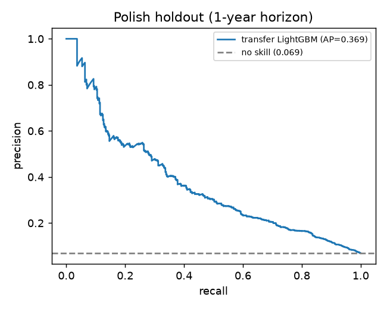
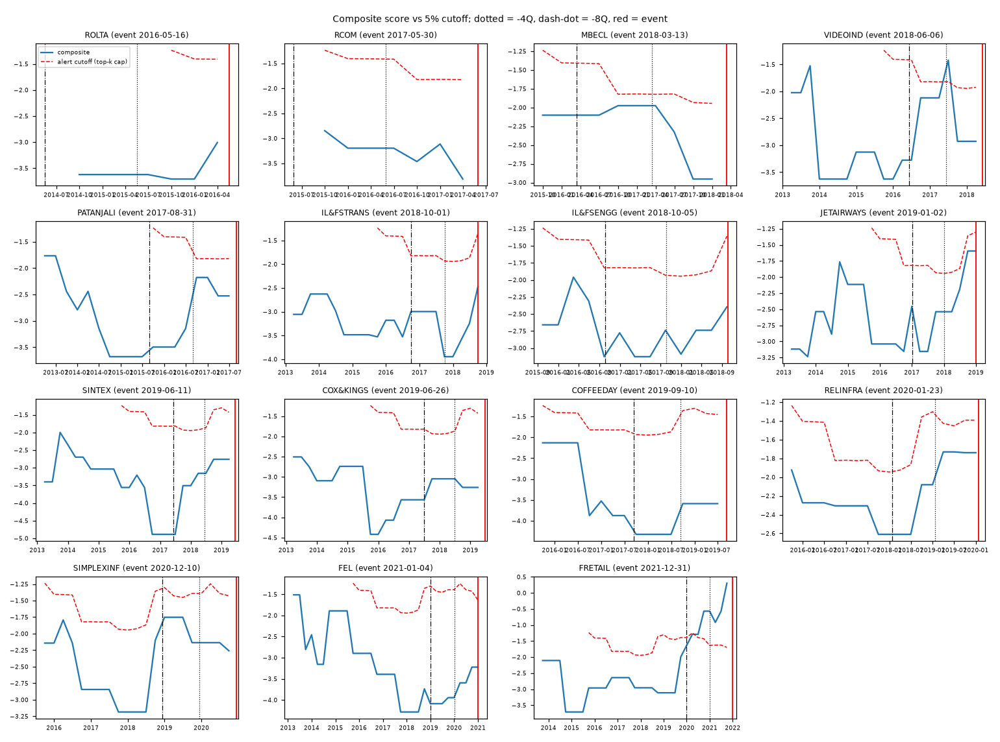
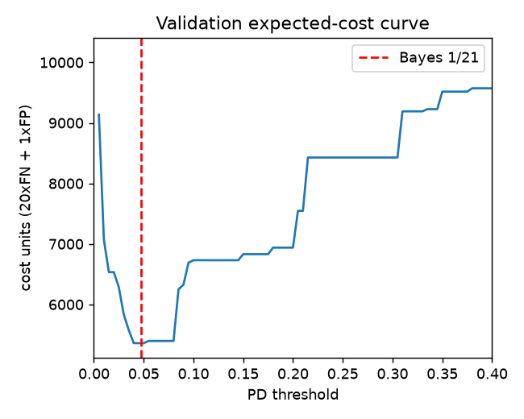

Generated by python run_all.py. Every number below is read from outputs/polish_metrics.json and outputs/india_eval*.json from the same run.
Polish (UCI 365). File k holds ratios with bankruptcy status after (6-k) years. Horizon split: train on 1-3year, validate on 4year (2-year horizon, about 8Q; used for selection, isotonic calibration and threshold), and keep 5year (1-year horizon, about 4Q) as the untouched holdout. This is a horizon split, not calendar time, because the files carry no dates. Duplicate rows were removed. A secondary firm-disjoint split within 5year gives PR-AUC 0.558.
| split | rows | defaults | default rate |
|---|---|---|---|
| train | 27703 | 1166 | 0.0421 |
| val | 9792 | 515 | 0.0526 |
| holdout | 5910 | 410 | 0.0694 |
Indian statements. Annual statements come from screener.in, which compiles annual reports and exchange filings (consolidated where available, otherwise standalone). There are 302,258 data points in outputs/provenance_financials.csv.gz. Each has a URL, an access time in UTC and an as-of availability date = FY end + 183 days (the Companies Act s.96 AGM deadline). 0.3% of the cells are blank at source; these are marked missing and never filled. Companies skipped as unparsable: DUMMYHEG, DUMMYINGL1, DUMMYINGL2, DUMMYINXGN, JISLDVREQS, SGL.
Default events. Each event date is the earliest default or D rating found:
| company | event_date | event_type | source_url |
|---|---|---|---|
| Rolta India Ltd | 2016-05-16 | Missed USD bond coupon; S&P cut to D | https://www.business-standard.com/article/pti-stories/s-p-downgrades-rolta-credit-rating-to-default-116062000499_1.html |
| Reliance Communications Ltd | 2017-05-30 | CARE D and ICRA D | https://www.careratings.com/upload/CompanyFiles/PR/Reliance%20Communications%20Limited-05-30-2017.pdf |
| McNally Bharat Engineering Co Ltd | 2018-03-13 | CARE D (issuer not cooperating) | https://www.careratings.com/upload/CompanyFiles/PR/Mcnally%20Bharat%20Engineering%20Company%20Limited-12-03-2020.pdf |
| Videocon Industries Ltd | 2018-06-06 | NCLT admission CP(IB)-02/MB/2018 (SBI petition) | https://www.casemine.com/judgement/in/5c6d0eeb4a93262639683a10 |
| Ruchi Soya Industries Ltd (now Patanjali Foods) | 2017-08-31 | Default date cited in creditor petition; NCLT admitted 2017-12-15 | https://ibbi.gov.in/webadmin/pdf/order/2017/Dec/15th%20Dec%202017%20in%20the%20matter%20of%20Ruchi%20Soya%20Industries%20Ltd.%20CP%201371%20&%20CP%201372-I&BP-NCLT-MAH-2017_2017-12-22%2012:33:39.pdf |
| IL&FS Transportation Networks Ltd | 2018-10-01 | ICRA D | https://nsearchives.nseindia.com/corporate/jyotsnam_03102018201837_Revised_Ratings_by_ICRA_Limited_298.pdf |
| IL&FS Engineering & Construction Co Ltd | 2018-10-05 | CARE D (debt not serviced since Sep 2018) | https://www.ilfsengg.com/News/comm2exchange/SE_Intimation_Revision_of_Credit_Rating_October_6_2018.pdf |
| Jet Airways (India) Ltd | 2019-01-02 | ICRA D (payment due 2018-12-31 delayed) | https://www.icra.in/Rating/ShowRationalReportFilePdf/76249 |
| Sintex Industries Ltd | 2019-06-11 | NCD principal + interest default; CARE C->D | https://sintex.in/wp-content/uploads/2025/05/Interest_non_payment_SE_SIL.pdf |
| Cox & Kings Ltd | 2019-06-26 | Commercial paper default Rs 150 cr; CARE D 2019-06-28 | https://nsearchives.nseindia.com/corporate/COX_KINGS_27062019205241_BSELetterCP_452.pdf |
| Coffee Day Enterprises Ltd | 2019-09-10 | ICRA D (from BB+) | https://www.icra.in/Rating/GetRationalReportFilePdf?id=129349 |
| Reliance Infrastructure Ltd | 2020-01-23 | CARE D on NCDs | https://www.careratings.com/pdf/resources/Annexure%20VI%2013-5-2020.pdf |
| Simplex Infrastructures Ltd | 2020-12-10 | CARE D on NCDs | https://www.careratings.com/upload/CompanyFiles/PR/202311121117_Simplex_Infrastructures_Limited.pdf |
| Future Enterprises Ltd | 2021-01-04 | NCD interest default; CARE D Jan 2021 | https://www.careratings.com/upload/CompanyFiles/PR/07012021113347_Future_Enterprises_Limited.pdf |
| Future Retail Ltd | 2021-12-31 | Missed Rs 3494.56 cr OTR payment; CARE D 2022-01-03 | https://www.careratings.com/upload/CompanyFiles/PR/03012022065309_Future_Retail_Limited.pdf |
| Reliance Capital Ltd | 2019-09-20 | CARE D | http://www.careratings.com/upload/CompanyFiles/PR/Reliance%20Capital%20Limited-09-20-2019.pdf |
Reliance Capital (an NBFC) is a separate financial track and is not counted in recall. The IL&FS parent and IFIN, DHFL, Bhushan, Essar, Monnet and Uttam Galva have no retrievable listed-company statement pages, so they are excluded. Jaypee Infratech, Amtek and Alok (2015 events) predate peer coverage and are also excluded.
Peers and universe. 44 sector-matched peers (peers.csv). The universe is 598 Nifty Total Market non-financial companies plus 300 seeded-random older NSE listings, frozen on 2026-10-29. Universe size by quarter: 62-930 names. Quarters before 2015-09-30 (fewer than 300 universe names) are not evaluable (n/e), and no alerts are raised in them.

| threshold | alerts | alert_rate | FN | FP | TP | cost | rule |
|---|---|---|---|---|---|---|---|
| 0.048 | 1891 | 0.320 | 92 | 1573 | 318.000 | 3413.000 | bayes_1_over_21 |
| 0.040 | 1893 | 0.320 | 92 | 1575 | 318.000 | 3415.000 | val_cost_optimal |
| 0.213 | 341 | 0.058 | 270 | 201 | 140.000 | 5601.000 | top_5pct_capacity |
| 0 | 410 | 0 | 8200.000 | flag_nobody |
Alert-cap check: the most alerts in any evaluable quarter is 40, and the highest alert rate is 4.99% (45 quarters, rule min(40, floor(0.05 x N))).
| variant | recall@4Q all [95% CI] | recall@4Q evaluable | recall@8Q all | recall@8Q evaluable | flag in [-8Q,-4Q] | peer flag rate |
|---|---|---|---|---|---|---|
| Polish-trained model only | 0/15 [0.00-0.22] | 0/14 [0.00-0.23] | 0/15 [0.00-0.22] | 0/12 [0.00-0.27] | 0/15 | 1.1% |
| + forensic overlay (Z'', F, M) | 1/15 [0.00-0.32] | 1/14 [0.00-0.34] | 0/15 [0.00-0.22] | 0/12 [0.00-0.27] | 1/15 | 1.5% |
| Full composite (headline) | 1/15 [0.00-0.32] | 1/14 [0.00-0.34] | 0/15 [0.00-0.22] | 0/12 [0.00-0.27] | 1/15 | 1.1% |
| Post-hoc + ICR/Debt-EBITDA rules (in-sample) | 1/15 [0.00-0.32] | 1/14 [0.00-0.34] | 0/15 [0.00-0.22] | 0/12 [0.00-0.27] | 1/15 | 0.9% |
Sensitivities:
| run | recall@4Q (full) | recall@8Q (full) | model-only @4Q |
|---|---|---|---|
| headline (lag 183d, full universe) | 1/15 [0.00-0.32] | 0/15 [0.00-0.22] | 0/15 [0.00-0.22] |
| 60-day availability lag | 1/15 [0.00-0.32] | 0/15 [0.00-0.22] | 0/15 [0.00-0.22] |
| large/mid-cap book only (Nifty Total Market) | 1/15 [0.00-0.32] | 0/15 [0.00-0.22] | 2/15 [0.02-0.41] |
| slug | event_date | q_4Q | fy_used_4Q | rank@4Q | flag 4Q | rank@8Q | flag 8Q | first flag (Q before event) | rank@4Q large-cap book |
|---|---|---|---|---|---|---|---|---|---|
| ROLTA | 2016-05-16 | 2015-03-31 | Mar 2014 | n/e | False | no data | n/e | ||
| RCOM | 2017-05-30 | 2016-03-31 | Mar 2015 | 360/685 (cap 34) | False | no data | 222/436 | ||
| MBECL | 2018-03-13 | 2016-12-31 | Mar 2016 | 52/716 (cap 35) | False | 122/685 | False | 27/457 | |
| VIDEOIND | 2018-06-06 | 2017-03-31 | Dec 2015 | 69/716 (cap 35) | False | 379/685 | False | 4.000 | 38/457 |
| PATANJALI | 2017-08-31 | 2016-06-30 | Mar 2015 | 343/684 (cap 34) | False | n/e | False | 210/435 | |
| IL&FSTRANS | 2018-10-01 | 2017-09-30 | Mar 2017 | 409/739 (cap 36) | False | 186/716 | False | 253/475 | |
| IL&FSENGG | 2018-10-05 | 2017-09-30 | Mar 2017 | 136/739 (cap 36) | False | 207/716 | False | 72/475 | |
| JETAIRWAYS | 2019-01-02 | 2017-12-31 | Mar 2017 | 103/739 (cap 36) | False | 114/716 | False | 51/475 | |
| SINTEX | 2019-06-11 | 2018-03-31 | Mar 2017 | 223/738 (cap 36) | False | 616/716 | False | 126/474 | |
| COX&KINGS | 2019-06-26 | 2018-03-31 | Mar 2017 | 200/738 (cap 36) | False | 317/716 | False | 109/474 | |
| COFFEEDAY | 2019-09-10 | 2018-06-30 | Mar 2017 | 512/737 (cap 36) | False | 400/715 | False | 326/473 | |
| RELINFRA | 2020-01-23 | 2018-12-31 | Mar 2018 | 96/764 (cap 38) | False | 116/739 | False | 42/496 | |
| SIMPLEXINF | 2020-12-10 | 2019-09-30 | Mar 2019 | 103/794 (cap 39) | False | 96/766 | False | 49/522 | |
| FEL | 2021-01-04 | 2019-12-31 | Mar 2019 | 462/794 (cap 39) | False | 482/764 | False | 278/522 | |
| FRETAIL | 2021-12-31 | 2020-12-31 | Mar 2020 | 2/834 (cap 40) | True | 70/794 | False | 6.000 | 2/558 |

Driver examples at 4Q: ROLTA: Sales growth (sales / prior-year sales): not reported in the filings (imputed with the training median) - verify manually | (Pre-tax profit + depreciation) / sales: not reported in the filings (imputed with the training median) - verify manually | Long-term liabilities / equity is high at 1.67 (worse than 89% of monitored borrowers); this raises the distress score. RCOM: Asset turnover (sales / total assets) is low at 0.27 (worse than 86% of monitored borrowers); this raises the distress score | Sales growth (sales / prior-year sales): not reported in the filings (imputed with the training median) - verify manually | (Net profit + depreciation) / total liabilities is low at 0.08 (worse than 61% of monitored borrowers); this raises the distress score. MBECL: Piotroski F-score only 0/9: profitability, cash flow, leverage and efficiency are mostly deteriorating | Asset turnover (sales / total assets) is low at 0.62 (worse than 65% of monitored borrowers); this raises the distress score | (Net profit + depreciation) / total liabilities is low at -0.07 (worse than 96% of monitored borrowers); this raises the distress score. VIDEOIND: Asset turnover (sales / total assets) is low at 0.22 (worse than 89% of monitored borrowers); this raises the distress score | Sales growth (sales / prior-year sales): not reported in the filings (imputed with the training median) - verify manually | (Net profit + depreciation) / total liabilities is low at -0.02 (worse than 93% of monitored borrowers); this raises the distress score.
| slug | event_date | n_signals | n_before_event | n_at_least_4Q_before | earliest_signal | lead_months_earliest |
|---|---|---|---|---|---|---|
| ROLTA | 2016-05-16 | 1 | 0 | 0 | ||
| RCOM | 2017-05-30 | 0 | 0 | 0 | ||
| MBECL | 2018-03-13 | 0 | 0 | 0 | ||
| VIDEOIND | 2018-06-06 | 1 | 1 | 1 | 2016-06-08 | 23.900 |
| PATANJALI | 2017-08-31 | 0 | 0 | 0 | ||
| IL&FSTRANS | 2018-10-01 | 2 | 2 | 0 | 2018-09-10 | 0.700 |
| IL&FSENGG | 2018-10-05 | 1 | 1 | 0 | 2018-09-04 | 1.000 |
| JETAIRWAYS | 2019-01-02 | 3 | 3 | 0 | 2018-05-24 | 7.300 |
| SINTEX | 2019-06-11 | 0 | 0 | 0 | ||
| COX&KINGS | 2019-06-26 | 1 | 1 | 0 | 2019-06-11 | 0.500 |
| COFFEEDAY | 2019-09-10 | 1 | 1 | 0 | 2019-06-30 | 2.400 |
| RELINFRA | 2020-01-23 | 2 | 2 | 0 | 2019-06-14 | 7.300 |
| SIMPLEXINF | 2020-12-10 | 0 | 0 | 0 | ||
| FEL | 2021-01-04 | 0 | 0 | 0 | ||
| FRETAIL | 2021-12-31 | 3 | 3 | 3 | 2020-04-01 | 21.000 |
| RELCAPITAL | 2019-09-20 | 2 | 2 | 0 | 2019-04-26 | 4.800 |
Only signals dated before the event count as warnings. For example, Rolta's S&P D on 2016-06-20 is after its event and only confirms it.
Matched case/peer panel, realised cost (missed defaults x 20 + false alarms x 1):
| lead | variant | TP | FN | FP | calc |
|---|---|---|---|---|---|
| 4Q | score_model | 0 | 15 | 0 | 20.0 x 15 missed + 1.0 x 0 false alarms = 300.0 |
| 4Q | score_model_forensic | 1 | 14 | 0 | 20.0 x 14 missed + 1.0 x 0 false alarms = 280.0 |
| 4Q | score_full | 1 | 14 | 0 | 20.0 x 14 missed + 1.0 x 0 false alarms = 280.0 |
| 4Q | score_posthoc_credit | 1 | 14 | 0 | 20.0 x 14 missed + 1.0 x 0 false alarms = 280.0 |
| 8Q | score_model | 0 | 15 | 2 | 20.0 x 15 missed + 1.0 x 2 false alarms = 302.0 |
| 8Q | score_model_forensic | 0 | 15 | 2 | 20.0 x 15 missed + 1.0 x 2 false alarms = 302.0 |
| 8Q | score_full | 0 | 15 | 2 | 20.0 x 15 missed + 1.0 x 2 false alarms = 302.0 |
| 8Q | score_posthoc_credit | 0 | 15 | 1 | 20.0 x 15 missed + 1.0 x 1 false alarms = 301.0 |
Universe model-expected cost (mean per evaluable quarter). PDs are calibrated on Polish data and prior-shifted to an assumed base rate of 1%, 2.5% or 5% (an assumption, not a sourced figure):
| base_rate | policy | alerts | exp_missed_defaults | exp_false_alarms | exp_cost |
|---|---|---|---|---|---|
| 0.01 | bayes_PD>=1/21 | 45.16 | 6.85 | 41.10 | 178.16 |
| 0.01 | capped_top_k | 38.38 | 7.32 | 34.80 | 181.27 |
| 0.01 | flag_nobody | 0.00 | 10.90 | 0.00 | 218.07 |
| 0.03 | bayes_PD>=1/21 | 135.18 | 10.46 | 119.97 | 329.11 |
| 0.03 | capped_top_k | 38.38 | 18.01 | 30.72 | 390.82 |
| 0.03 | flag_nobody | 0.00 | 25.67 | 0.00 | 513.31 |
| 0.05 | bayes_PD>=1/21 | 246.87 | 12.77 | 211.85 | 467.28 |
| 0.05 | capped_top_k | 38.38 | 35.13 | 25.71 | 728.28 |
| 0.05 | flag_nobody | 0.00 | 47.79 | 0.00 | 955.86 |

Book. 930 real listed Indian non-financial companies scored at 2026-09-30 (frozen universe, data/reference/universe_frozen.csv; a proxy for the brief's 800-borrower book, not simulated).
Alert threshold. Each quarter, flag the top k = min(40, floor(5% x N)) by composite score (this quarter: k = 40, 40 alerts). This is a hard cap, so the review team never receives more than 40 names.
Quarterly cycle.
1. T+5 days: refresh filings and prices. Use only statements public by T (FY end + 183 days). Score every borrower.
2. Flagged ranks 1-10 -> ESCALATE: senior credit officer within 2 weeks; covenant test, bank-statement/GST cross-check, management call.
3. Other flagged names -> REVIEW: analyst deep-dive this quarter using the three plain-language drivers; confirm or dismiss within 30 days.
4. Ranks up to 80 -> WATCH: monthly monitoring of price, ratings and pledges.
5. Override, escalate regardless of rank: downgrade to sub-investment grade or by 2 or more notches; auditor resignation, qualification or disclaimer; results deferred past the LODR deadline; promoter pledge above 50% or up more than 10 pp in a quarter; any lender reporting SMA-1/SMA-2 (CRILC).
6. Escalation path: analyst -> credit committee (watch-list tag, limit freeze, extra security) -> CRO/Board risk committee above delegated limits -> RBI June 2019 prudential framework (inter-creditor agreement) on SMA-2 or confirmed stress.
Threshold and cost. A missed default costs 20.0 and a false alarm costs 1.0. Flagging is worth it when (1-p) x 1.0 < p x 20.0, i.e. p > 1/21 = 0.0476 (Polish validation cost optimum: 0.040). Capacity binds, so the operating rule is "top-k capped at 40; within that, everyone with PD > 1/21 is reviewed first". At an assumed 2.5% annual base rate, model-expected cost this quarter is 353.7 units with capped top-k, versus 451.3 with no reviews and 323.1 for an uncapped Bayes rule (118 alerts, which exceeds capacity).
Latest capped watch-list, top 10. These are screening outputs, not predictions of default:
| rank | company | score_full | Z2 | F_score | driver_1 |
|---|---|---|---|---|---|
| 1 | GSS Infotech Ltd | 0.430 | 4.074 | 3.000 | Receivable days is unusual at 248.86 (98th percentile of monitored borrowers); this raises the distress score |
| 2 | Hexa Tradex Ltd | 0.127 | 8.829 | 4.000 | Quick ratio ((current assets - inventory) / short-term liabilities) is low at 0.00 (worse than 100% of monitored borrowers); this raises the distress score |
| 3 | Asian Hotels (East) Ltd | -0.362 | -1.622 | 5.000 | Asset turnover (sales / total assets) is low at 0.17 (worse than 92% of monitored borrowers); this raises the distress score |
| 4 | TECIL Chemical & Hydro Power Ltd | -0.432 | -16.843 | Asset turnover (sales / total assets) is low at 0.00 (worse than 100% of monitored borrowers); this raises the distress score | |
| 5 | Mangalam Drugs and Organics Ltd | -0.500 | -0.085 | 3.000 | Share price fell 56% over 12 months: the market is pricing serious stress |
| 6 | Sobha Ltd | -0.641 | 2.575 | 7.000 | Asset turnover (sales / total assets) is low at 0.27 (worse than 88% of monitored borrowers); this raises the distress score |
| 7 | Blue Coast Hotels Ltd | -0.854 | -36.963 | 4.000 | Quick ratio ((current assets - inventory) / short-term liabilities) is low at 0.12 (worse than 99% of monitored borrowers); this raises the distress score |
| 8 | Vedanta Iron & Steel Ltd | -0.880 | -6.477 | Asset turnover (sales / total assets) is low at 0.70 (worse than 55% of monitored borrowers); this raises the distress score | |
| 9 | TRF Ltd | -0.975 | -4.317 | 2.000 | Asset turnover (sales / total assets) is low at 0.24 (worse than 89% of monitored borrowers); this raises the distress score |
| 10 | Vardhman Polytex Ltd | -0.980 | -14.170 | 8.000 | Quick ratio ((current assets - inventory) / short-term liabilities) is low at 0.16 (worse than 98% of monitored borrowers); this raises the distress score |
| slug | n_fy_on_screener | first_fy | n_fy_public_before_event | has_3y_pre_event | missing_feature_share_pre_event | F_score_missing_years | M_score_missing_years |
|---|---|---|---|---|---|---|---|
| ROLTA | 13 | Mar 20149m | 3 | True | 0.512 | 2 | 3 |
| RCOM | 12 | Mar 2015 | 2 | False | 0.018 | 1 | 1 |
| MBECL | 12 | Mar 2015 | 3 | True | 0.012 | 1 | 1 |
| VIDEOIND | 16 | Sep 2006 | 14 | True | 0.436 | 11 | 11 |
| PATANJALI | 12 | Mar 2010 | 7 | True | 0.005 | 2 | 1 |
| IL&FSTRANS | 12 | Mar 2007 | 12 | True | 0.003 | 2 | 1 |
| IL&FSENGG | 12 | Mar 2015 | 4 | True | 0.009 | 1 | 1 |
| JETAIRWAYS | 11 | Mar 2008 | 11 | True | 0.003 | 2 | 1 |
| SINTEX | 12 | Mar 2011 | 8 | True | 0.004 | 1 | 1 |
| COX&KINGS | 12 | Mar 2009 | 10 | True | 0.004 | 2 | 1 |
| COFFEEDAY | 12 | Mar 2015 | 4 | True | 0.009 | 1 | 1 |
| RELINFRA | 12 | Mar 2015 | 5 | True | 0.007 | 1 | 1 |
| SIMPLEXINF | 12 | Mar 2015 | 6 | True | 0.006 | 1 | 1 |
| FEL | 13 | Jun 2010 | 11 | True | 0.143 | 4 | 4 |
| FRETAIL | 10 | Dec 2012 | 10 | True | 0.254 | 4 | 4 |
| RELCAPITAL | 12 | Mar 2013 | 6 | True | 0.006 | 1 | 1 |
Videocon used irregular fiscal periods, so growth ratios are blanked for non-12-month periods. Ruchi Soya has a gap between FY2019 and FY2025 on screener.in, and only pre-event years are used. Rolta's statements start in FY2014, so its 8Q point cannot be scored.
Run make setup && make all (python run_all.py), then make test (pytest). Start the local app with make app (Streamlit). python run_all.py --scrape re-fetches source pages; this changes the frozen inputs. Seed 42. No push and no deployment.